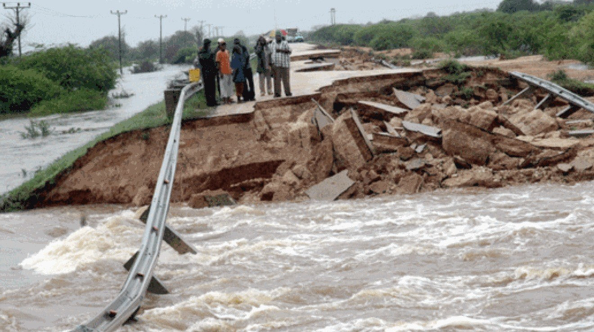

Photograph: Onyango George / EA Hospitality Pulse
East Africa's lodges hedged the room rate. The plate is the open position.
Kenya's maize harvest has fallen to a seven-year low, food inflation is running at 9.5 per cent, and the strongest El Nino since 1950 is landing on the region's granary. Full-board rates for 2027 are already contracted. The cost inside them is not.
The cabinet secretary was explaining a shortage, and in the middle of it he said something that should have unsettled every lodge owner between Laikipia and the Selous.
Mutahi Kagwe, Kenya's cabinet secretary for agriculture and livestock development, went on NTV in the first week of October to account for a harvest that had not arrived. The National Cereals and Produce Board had spent two months buying maize off farmers and had managed, by his own account, less than a million bags. The gap would be bought abroad. "We will import from the East Africa region and COMESA region," he said. Then, almost as an aside: "We import most of our maize from Tanzania."
Read that twice if you sell safari beds. The country that supplies the staple carbohydrate underneath a Kenyan lodge's breakfast, lunch and dinner is the same country that competes with it for the guest eating the meal, and it is the same country now sitting under a rainfall forecast that gives the Lake Victoria basin and western Tanzania a high chance of more than 400mm between October and December.
East African hospitality has spent 2026 hedging the wrong price. The industry's attention has gone, understandably, to the visible lines: commission, parity, fuel, park fees, the levies that arrive by gazette notice. Each of those has had its moment this year. None of them is the exposure most likely to decide what a full-board property actually earns in 2027. That exposure is the plate, and the plate is the one input an operator sells forward twelve to eighteen months in hard currency while buying it at spot, weekly, in shillings, from a food system currently repricing faster than it has in years.
Start with the harvest, because everything else follows from it. Kenya's grain production has fallen to its lowest level in seven years, according to the Cereal Millers Association, whose chief executive, Paloma Fernandes, put it plainly in September: "This is the steepest decline in production and it is huge for us." Only six major producing counties are expected to deliver more than a million bags this season. The Famine Early Warning Systems Network, assessing the same crop in its 11 September seasonal monitor, was more specific and more alarming: preliminary assessments pointed to national maize yield deficits of roughly 28 per cent, rising to about 43 per cent in the high-potential North Rift counties of Trans Nzoia, Uasin Gishu and Nakuru. Those three counties are not a marginal rain-fed periphery. They are the part of Kenya that is supposed to feed the rest of it.
The market has already priced what the state has not. The Warehouse Receipt System Council put the national average for a 90kg bag of white maize at KSh4,243.50 on 12 October. The NCPB, trying to mop up supply for the strategic reserve, had raised its buying price to KSh4,000 from KSh3,800. A farmer looking at those two numbers does not sell to the board, which is precisely why the board got less than a million bags. The state is bidding under the market for a commodity the market knows is short.
That is the cost side arriving. The consumer side has already arrived. Kenya's September inflation print, released by the Kenya National Bureau of Statistics at the start of October, put headline inflation at 6.8 per cent, the third consecutive monthly climb from 6.4 per cent in June. Food and non-alcoholic beverages ran at 9.5 per cent year on year. Underneath that average sit the items a kitchen actually buys: potatoes up 33.6 per cent on the year, sukuma wiki up 32.5 per cent, cabbage up 25.8 per cent, tomatoes up 21.1 per cent. Beef with bones was quoted at KSh782.68 a kilogramme. Diesel, which moves every one of those items from farm to camp, was 26.9 per cent dearer than a year before. "The price increase was primarily driven by a rise in prices of items in the food and non-alcoholic beverages," said Macdonald Obudho, the bureau's director general, in the understated register of a statistician describing a problem other people will have to solve.
Now put that against the way an East African lodge sells. The long-haul trade contracts in advance. A camp agreeing 2027 rates with a European or North American operator did so in the first half of 2026, in dollars, with a single annual uplift negotiated against last year's cost base and this year's competitive pressure. Most of those contracts are full-board or all-inclusive, which means the property has sold a fixed number of meals at a fixed price before it knows what the meals will cost. The room has a yield manager. The plate has a procurement officer and a weekly market run. Only one of those two positions is hedged, and it is not the one with the inflation on it.
This is a margin transfer, and it moves in one direction. If a lodge negotiated a six or seven per cent uplift for 2027, which would have looked generous in April, and its food basket runs at nine or ten, the difference is simply handed to the tour operator who bought the allocation. Nobody reopens a signed rate sheet in the middle of a season. The guest does not see it, the operator does not pay it, and the property absorbs it in a line item that does not appear in any RevPAR comparison.
What turns this from a bad year into a structural problem is the weather, and here the forecast is unusually confident. The World Meteorological Organization in September put the likelihood of El Nino persisting through February 2027 at close to 100 per cent, and expects it to intensify into one of the strongest events since 1950. The Red Cross Red Crescent Climate Centre, summarising the regional outlook, noted that this was the first time in fifty years of seasonal forecasting that the organisation had issued an outlook with that degree of confidence. "This exceptional El Nino demands exceptional preparation and response," said Celeste Saulo, the WMO's secretary general. "We have no time to lose." The UN secretary general, Antonio Guterres, was blunter: "El Nino is being supersized before our eyes."
ICPAC, the regional climate centre, gives a 90 per cent likelihood of enhanced rainfall over southern Ethiopia, central and southern Somalia and north-eastern Kenya, with seasonal totals above 400mm across the Lake Victoria basin, Burundi, western Rwanda and western Tanzania. FEWS NET flags the same pattern with the agricultural consequence attached: excess rain can disrupt planting, damage crops already in the ground and delay harvests, alongside flooding, waterlogging and landslides in the Tana basin and urban flooding in Nairobi and Kampala.
Here is the timing trap, and it is the part most operators will get wrong. A wet short-rains season is, on a two-year view, good news. It regenerates pasture, refills surface water and supports an early second-season planting across the bimodal zones of Kenya, Uganda, Rwanda and southern Somalia. The relief is real. It simply arrives after the season it was meant to cover. For a camp holding contracted full-board rates through the 2027 high season, the rain that eventually lowers its food cost first raises it, by damaging the crop in the ground, cutting the murram roads its supplier uses and putting a fortnight on every delivery. The recovery shows up in the 2028 rate year. The disruption shows up in the 2027 accounts.
Which brings the argument back to Kagwe's aside. The standard mitigation for a short domestic crop is to import, and Kenya is doing exactly that. The Cereal Millers Association has asked the government to gazette three million tonnes of white maize for duty-free importation, over a nine-month window long enough for importers to secure contracts, financing and shipping. The ministry separately intends to gazette 360,000 tonnes of yellow maize for animal feed, to keep more white maize on the human side of the ledger. Lilian Tomitom, Kenya's high commissioner to Zambia, has confirmed Zambian availability, though transport costs from Lusaka are what they are.
But the association's own warning is the one a hotelier should write down. Tanzania, the nearest and cheapest source, could impose export restrictions, as it has when its domestic prices have risen before. The same rains now forecast to swell the Lake Victoria basin fall on Tanzania's growing regions too. The hedge and the hazard are the same country, and the moment Kenya most needs Tanzanian maize is precisely the moment Tanzania is least likely to let it cross. Nor is the border frictionless when it is open. Kagwe's other instruction to importers that week, "Do not bring maize that is not going to pass the tests," refers to aflatoxin and moisture limits that currently take up to four hours to verify in a laboratory and three to five days to clear at a border post, against a ministry target of about ten minutes.
None of this argues for panic, and none of it is a reason to stop selling full board, which remains the right product for a remote camp where the guest has nowhere else to eat. It argues for one change in how the contract is written and three in how the kitchen is run.
The contract change is a food-cost reopener. Hard-currency rate sheets for 2027 that are still unsigned should carry a clause allowing a renegotiation if the Kenyan or Tanzanian food index moves beyond an agreed band, in the same way that fuel surcharges travel with transfer pricing. Operators will resist it and some will refuse. The ones who refuse are telling you they expect the index to move.
The kitchen changes are duller and more effective. Shorten the menu, because every additional dish is an additional exposure to a commodity nobody is tracking. Move the protein mix deliberately rather than by default, before beef at KSh783 a kilogramme makes the decision for you. And buy forward where storage allows, which for maize, rice, oil and flour at a property with a dry store is a genuine hedge available today at a known price.
The last word belongs to a man who was talking about something else. At the East African Community's tourism council in Arusha this month, the deputy secretary general, Andrea Aguer Ariik Malueth, told ministers that "the world will judge East Africa by the quality of the rooms, the meals and the service that our visitors receive." He meant it as an exhortation about standards. Read in the week Kenya went shopping for three million tonnes of someone else's maize, it reads as a warning about supply.
📣 Telegram 💬 WhatsApp 💼 LinkedIn 📚 All guides